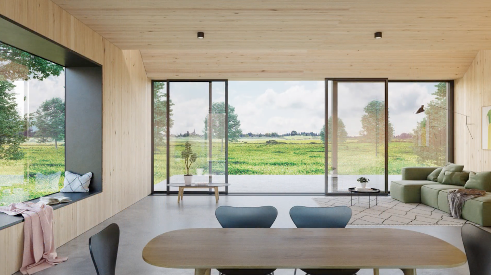
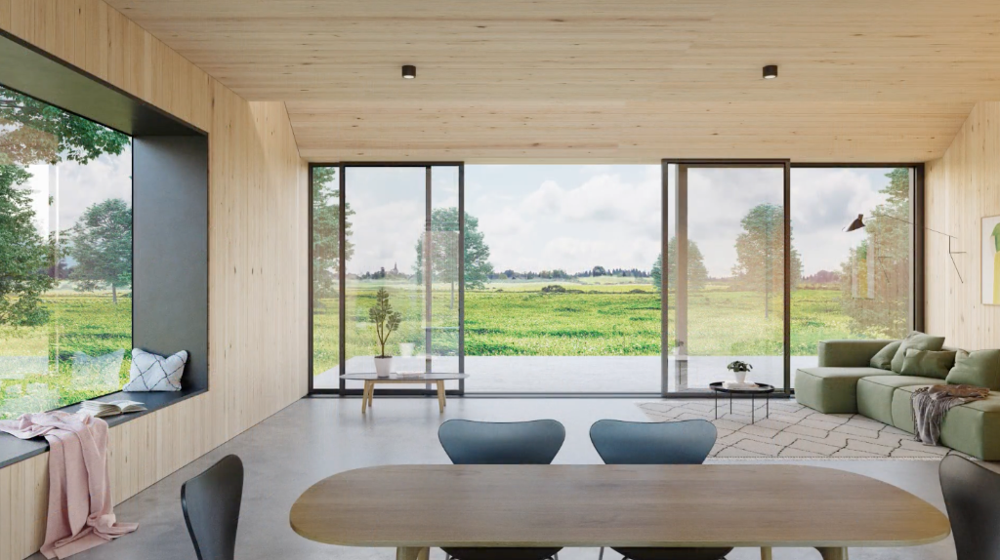

Wat is Landgood?
+
Landgood helpt landgoedeigenaren door het ontwikkelen
van kleinschalige woonclusters in erfpacht, gericht op ouderen die bewust kiezen voor een
natuurlijker leven, zingeving en gemeenschapszin. Dit gecombineerd met voedselbossen zorgt
voor een duurzame inkomstenstroom.
Is dit überhaupt wel mogelijk met mijn landgoed?
+
Elk landgoed is uniek. Tijdens een vrijblijvend
gesprek bekijken we samen de mogelijkheden voor uw specifieke situatie, rekening houdend met
bestemmingsplannen en omgevingsvisie, ligging en uw wensen als eigenaar.
Hoe lang duurt een dergelijk traject?
+
Een volledig traject duurt gemiddeld 4 tot 10 jaar,
afhankelijk van de complexiteit en bestuurlijke procedures. We begeleiden u stap voor stap
door het hele proces. Omdat we de ervaring hebben dat de processen lang duren, kunnen we
maar beter vroeg beginnen. En aangezien wij dat met relatief lage kosten kunnen doen, is het
voor u op dit moment een kleine stap.
Wat kost jullie advies?
+
Een eerste gesprek is altijd vrijblijvend. Daarna
stellen we een voorstel op maat op, afgestemd op de omvang en complexiteit van uw project.
We werken transparant en bespreken alle kosten vooraf. Maar ga er vanuit dat het in beginsel
niet enorme kosten met zich meebrengt. We stellen een gecombineerde visie (die van uw
landgoed icm de visie van Landgood) op die we toetsten bij de gemeente. Pas als we het idee
krijgen dat de gemeente de visie deelt gaan we volgende stappen zetten.
Ik heb al een rentmeester. Zijn jullie niet wat overbodig?
+
Absoluut niet! We werken juist graag samen met uw
rentmeester. Wij brengen specifieke expertise in op het gebied van ontwikkeling,
agroforestry en natuurinclusief bouwen, als aanvulling op de bestaande kennis. Uw
rentmeester heeft de meeste lokale kennis en mogelijk (samen met uw) de juiste contacten bij
de gemeente of provincie. Wij kunnen een totaalpakket bieden, inclusief landschapsarchitect,
ontwikkelaar, en groenexpert.
Wie komen er op ons landgoed te wonen en hebben we daar geen last van?
+
De woningen zijn specifiek bedoeld voor ouderen die
bewust kiezen voor een natuurrijke omgeving, gemeenschapszin en een betekenisvolle
levensfase. Door het erfpachtmodel behoud u als eigenaar zeggenschap. We toetsen bij de
gemeente waar behoefte aan is, en scherpen zo onze visie en uiteindelijk plan aan, om de
slagingskans zo groot mogelijk te maken. We kijken samen naar een geschilkte locatie zodat
de privacy van het huidige landgoed indien wenselijk blijft bestaan. Ook kijken we hoe de
nieuwe woningen passen binnen het landschap.
Wat is een voedselbos?
+
Een voedselbos is een natuurlijk ecosysteem waarin
eetbare gewassen, struiken en bomen samen groeien. Het bevordert biodiversiteit, verbetert
de bodemkwaliteit en biedt tegelijkertijd oogst en educatieve waarde. Iets waar gemeentes
over het algemeen enthousiast van worden, en het is ook een zeer welkome en aantrekkelijke
aanvulling op uw landgoed. Het is daarnaast noorzakelijk om het stuk rood voor elkaar te
krijgen.
Over hoe veel woningen hebben we het?
+
We denken aan kleinschalige clusters van 15 tot 20
woningen/appartementen per locatie. De exacte omvang bepalen we samen op basis van de
draagkracht van uw landgoed en uw wensen als eigenaar.
Wat kan dit ons landgoed opleveren?
+
Met deze woningen kan erfpacht worden verdiend, wat
over het algemeen hoger is dan pacht op agrarische gronden. Het is altijd een afweging
tussen initiële verkoopprijs, en erfpacht. Dat is een samenspel tussen ontwikkelaar en
grondeigenaar.


 
